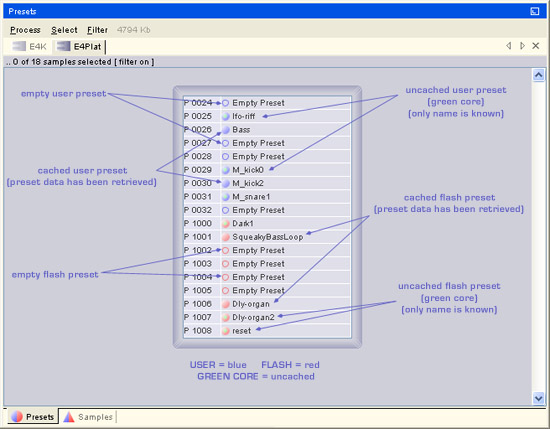

![[Sample States]](./SampleStates.jpg)
There are three primary types of data that ZoeOS retrieves from and sends to the remote. These are:
ZoeOS employs an on-demand system for retrieving data - this means data is only retrieved from the remote as the user actaully needs it. For example, the first time the user requests that a preset be opened the data is retrieved from the remote and placed in a cache. This cache is a local representation of the remote data and frees the system from having to repeatedly retrieve data each time the user needs to view or edit it.
Presets are accessed from the preset palette and transition through four states in the system:

Samples are accessed from the samples palette and the handling of samples is different to that of presets. Because sample data sets can be large and ZoeOS currently does not support direct sample editing, samples skip the uncached state and the audio data in the sample is not kept locally in the cache. Samples transition from a pending state directly to a cached state which only holds the sample name and optionally the sample header if the device is SMDI coupled (in some ways the sample cached state is quite similar to the preset uncached state).
The sample states in the system are:
ZoeOS works hard to ensure the local data cache remains consistent with the remote. If the user makes changes to presets, samples, master or multimode settings from the front panel, locally cached data may become inconsistent. The user should ensure to refresh any data that was changed outside of ZoeOS. Some causes of cache inconsistency and potential solutions follow:
| Source of inconsistency | Solution |
|---|---|
| The user makes changes to a preset from the front panel | Refresh the preset in ZoeOS |
| The user loads a completely new bank from the front panel | Perform the Refresh Bank command in the device palette |
| The user merges a new bank from the front panel | Perform Refresh bank in the device palette or just refresh the preset locations that were merged if the merged bank is small |
| The user makes changes to the multimode from the front panel | Refresh the multimode in ZoeOS by pressing the second top-left button in the multimode palette or by right clicking the background of the multimode palette and choosing the appropiate refresh command |
| The user makes changes in any of the master sections from the front panel | Refresh the master in ZoeOS by pressing by right clicking the background of the master palette and choosing the appropiate refresh command |
| Previous session restore option was active when a device was being marshalled, but the bank from the previous session was not loaded on the remote | Perform the Refresh Bank command in the device palette or load the bank from the previous session on the remote |
Cache inconsistency is generally less of a problem with samples as ZoeOS doesn't cache any audio data, but do be careful with cache inconsistency when dealing with presets.
Cache inconsistecy is unlikely to be a persistent problem for you, only ocassionally requiring your attention. Getting into the right habits while using ZoeOS will effectively eliminate it altogether.